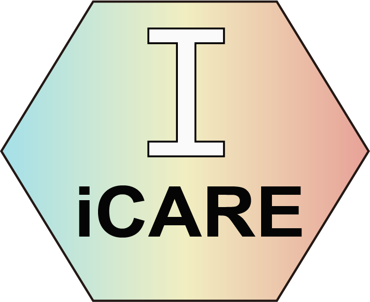

flowchart LR A[Clinical or omics data] --> B[CreateStatObject] B --> C[Stat] C --> D[Train_Model] C --> E[Subtyping] C --> F[PrognosiX] D --> G[ModelDeployment] E --> H[New_Sub_Manager] F --> I[New_Prog_Manager]
icare: Intelligent ClinlAbomics Research Expedition
Intelligent ClinlAbomics Research Expedition

0.1 About icare
icare is a modular R framework for clinical statistics and clinlabomics research. It connects data quality control, missing-data handling, feature selection, supervised learning, unsupervised patient subtyping, and survival modeling in one reproducible workflow. The package also provides model interpretation, nomograms, decision-curve analysis, and interactive deployment tools.
The framework is built around four S4 analysis objects. Each object records both the current data and the fitted workflow state—including imputation values, scaling parameters, selected features, and trained models—so that the same transformations can be replayed consistently for external cohorts or new patients.
0.2 What This Book Covers
| Module | Core object | Main tasks |
|---|---|---|
| 1. Data cleaning and exploration | Stat |
Type detection, missing-value imputation, outlier handling, encoding, normalization, differential features, visualization, and Table 1 |
| 2. Classification modeling | Train_Model |
Feature selection, leakage-aware data splitting, model benchmarking, ensembles, tuning, explanation, clinical thresholds, and NRI/IDI |
| 3. Unsupervised subtyping | Subtyping |
K-means, NMF, latent profile analysis, cluster validation and agreement, marker discovery, t-SNE/UMAP, and subtype deployment |
| 4. Survival and prognosis | PrognosiX |
Cox and machine-learning survival models, feature selection, risk stratification, validation, nomograms, calibration, decision curves, and deployment |
Each module contains a concise quick-start chapter and a more complete advanced workflow. Module 4 also includes an extended PrognosiX chapter covering competing risks, repeated cross-validation, time-dependent ROC comparison, multi-time calibration, Bayesian tuning, and external-validation diagnostics. Code is divided into small executable chunks, and important results and figures appear immediately below the chunk that creates them.
0.4 Installation
Install the current development version from GitHub:
Code
install.packages("remotes")
remotes::install_github("YuLab-SMU/icare", dependencies = TRUE)Some workflows use Bioconductor packages. If ComplexHeatmap is unavailable, install it separately:
Code
install.packages("BiocManager")
BiocManager::install("ComplexHeatmap")0.5 How to Read the Tutorial
Start with Before You Begin, then choose a quick-start chapter for the shortest complete workflow. Move to the corresponding advanced chapter when you need broader model comparison, publication-oriented figures, clinical interpretation, or deployment. Replace the example paths, column names, outcome definitions, and analysis settings before applying any workflow to a new study.
0.6 Citation and License
When using the package, cite:
Luo H, Long F, Lin H, Yuan C, Wang F, Huang J, Yu G. icare: Intelligent ClinlAbomics Research Expedition. R package version 1.0.1.
icare is distributed under the GPL-3 license. This tutorial follows the active development version of the official repository; consult the repository history and NEWS.md when exact version reproducibility is required.